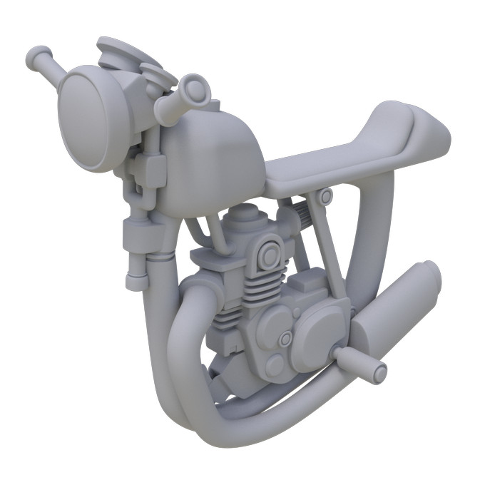

Hello, I am Giulio. I'm in love with animation and computer graphics.
I discovered my passion back in the summer of 2016 and since then
I've been constantly working to improve my skills.
I am currently a Visual Computing Grad student at the
University of Stuttgart and I spent
an exchange semester at Purdue University, majoring in Animation.
Before moving to Germany I have been an Assistant Technical Director at Rainbow CGI for a few months.
I also got a B.Sc. in Computer Engineering at Roma Tre University.
Modern interactive implementation of the
1997 "Instant Radiosity" paper
Presented as final project for the "Practical Course in Visual Computing" at the University of Stuttgart.
It uses "OGL4Core Framework",
an educational tool developed at the University which offers an easy interface to some OpenGL 4 functionalities.
A Naive Full Monte Carlo Path Tracer on a Compute Shader is used to displace the Virtual Point Lights.
Each VPL has its own shadow map stored into a cubemap texture array. Every shadow map is generated in just one render pass.
I had the need of a music player application with a non-volatile play-queue.
In other words, a player which doesn't forget the play-queue between sessions
and resumes it from where it has been left, like iPods do.
Also I love album covers and I wanted them displayed big.
So I just wrote one in Python 3 using PySide2, SQLite3, FFmpeg, and PyAudio.
It lacks many features
-- it lacks of a scrub feature and there is no GUI to manage the library, to name two --
but it satisfies my needs and I use it almost daily.

Hoverbike
Personal project modeled in Maya. Rendered in Renderman.
Monte Carlo pathtracer with direct+indirect light contribution splitting and a BVH to accelerate ray-scene intersection. Beside STL, it has only OpenEXR as dependency.
A CD-DA player done using a Raspberry Pi 3 Model B+, an USB2 CD drive and an SPI audio interface.
The software has been written in Python 3 and relies on cdparanoia for ripping.
The program has been integrated in Raspbian as an enabled Systemd unit
so it runs at boot as a service.
The Pi has been tweaked to consume as less power as possible to leave power for the CD drive.
Raytracer
Barebone ray tracer with shadow rays. One of my first projects in C++.
Final project for the "VFX: Particles and Procedural FX" course at Purdue University.
Credits to Charles Feng
for the bass model. Everything but that has been made by me.
Hands and bass made in Maya. Smoke FX and rendering done in Houdini, compositing in Nuke.
Augmented Reality project done for the VR/AR course at the University of Stuttgart in team with
Anastasia Dzamashvili and
Jad Maalouly.
The app lets you draw multi-colored 3D doodles in AR and then store them on a public server.
The doodles will stay in the same physical spot even if an another user scouts the same place with his own device.
The idea was basically allowing users to create virtual graffitis on the real world.
Unity, Google ARCore and Flask have been used to create all the software pieces involved.
A Julia implementation of a
sperimental geometric kernel capable of boolean operations on very complex
3D models. The system is based on
LAR.
This is the result of my work at the
Computational Visual Design Laboratory
of Roma Tre University.